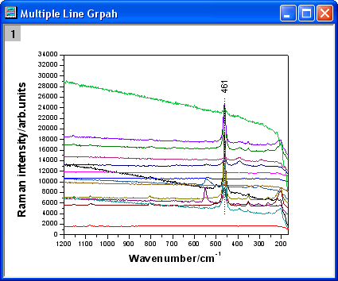
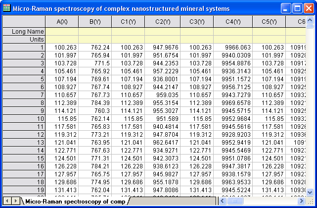
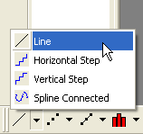
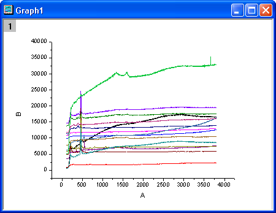
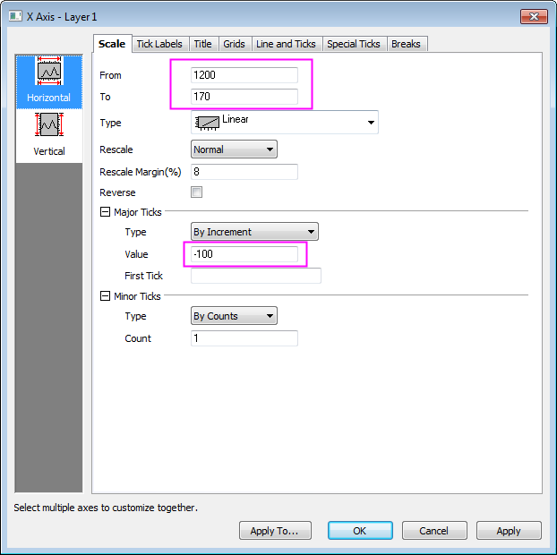
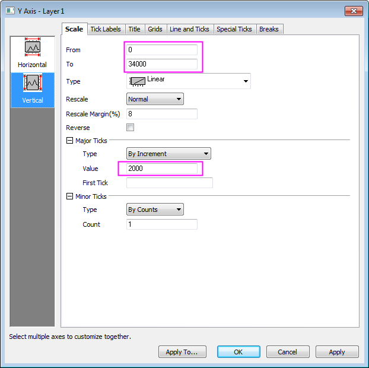
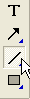
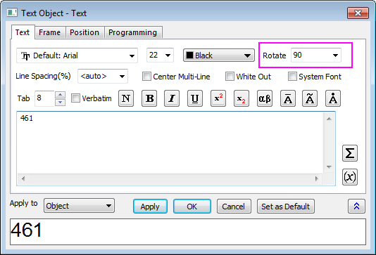
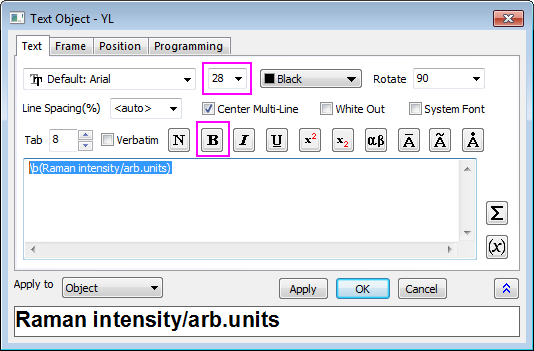
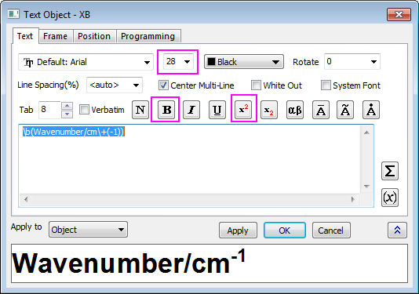

Mikro-Raman-Spektroskopie von komplexen nanostrukturierten Mineralsystemen
Customize-MutliLines-Graph
Zusammenfassung
Dieses Tutorial zeigt Ihnen, wie Sie ein mehrfaches Liniendiagramm erstellen und es benutzerdefiniert anpassen.
-
-
-
- 
Origin-Version mind. erforderlich: Origin 2015 SR0
Schritte
- Erstellen Sie ein neues Arbeitsblatt. Wählen Sie Hilfe: Ordner öffnen: Sample-Ordner ... im Menü, um den Ordner "Samples" zu öffnen. Öffnen Sie in diesem Ordner den Unterordner Graphing. Dort befindet sich die Datei Micro_Raman_Spectroscopy.txt. Ziehen Sie diese Datei per Drag&Drop in das leere Arbeitsblatt, um sie zu importieren.
- 
- Markieren Sie alle Spalten in dem Arbeitsblatt. Klicken Sie mit der rechten Maustaste und wählen Sie Setzen als: XY XY im Kontextmenü. Klicken Sie auf die Schaltfläche Linie auf der Symbolleiste 2D-Grafiken.
- 
- Löschen Sie die Legende. Das Diagramm sollte folgendermaßen aussehen:
- 
- Klicken Sie doppelt auf die X-Achse, um den Dialog Achsen zu öffnen. Legen Sie auf der Seite Skalierung die Optionen fest, die im Screenshot unten zu sehen sind.
- 
- Klicken Sie auf das Symbol Vertikal im linken Bedienfeld und gehen Sie zur Registerkarte Skalierung der Y-Achse. Legen Sie die Optionen entsprechend der Screenshots unten fest und klicken Sie auf OK.
- 
- Danach wenden Sie ein Diagrammdesign an, um eine obere X-Achse und eine rechte Y-Achse hinzuzufügen. Wählen Sie Einstellungen: Designs verwalten, um den Dialog Designs verwalten zu öffnen. Aktivieren Sie die Registerkarte Diagramm und wählen Sie Opposite Lines aus der Tabelle. Klicken Sie auf die Schaltfläche Jetzt anwenden. Klicken Sie auf Schließen, um den Dialog zu schließen.

- Klicken Sie auf die Schaltfläche Liniendiagramm auf der Symbolleiste Hilfsmittel und zeichnen Sie eine Linie durch die Zentren der Peaks Halten Sie die Shift-Taste während des Zeichnens gedrückt, um sicherzustellen, das sie sich an der vertikalen Linie ausrichtet. Klicken Sie doppelt auf die Linie. Wählen Sie auf der Registerkarte Linie die Option Striche in der Auswahlliste Typ. Klicken Sie auf OK.
- 
- Klicken Sie auf die Schaltfläche Text auf der Symbolleiste Hilfsmittel. Fügen Sie ein Textobjekt in der Nähe des Linienobjekts hinzu und geben Sie dann 461 ein.

- Klicken Sie mit der rechten Maustaste auf das Textobjekt und wählen Sie Einstellungen im Kontextmenü. Legen Sie im Dialog Text die Optionen, wie im Screenshot unten gezeigt, fest. Klicken Sie auf OK.
- 
- Klicken Sie mit der rechten Maustaste auf den Titel der Y-Achse und wählen Sie Einstellungen im Kontextmenü. Geben Sie im Text des Dialogs Raman intensity/arb.units im Bearbeitungsfeld ein, markieren Sie es, klicken Sie auf die Schaltfläche Fett und ändern Sie die Größe in 28. Klicken Sie auf OK.
- 
- Klicken Sie mit der rechten Maustaste auf den Titel der X-Achse und wählen Sie im Kontextmenü Einstellungen aus . Geben Sie im Text des Dialogs Wavenumber/cm-1 im Bearbeitungsfeld ein, markieren Sie es, klicken Sie auf die Schaltfläche Fett und ändern Sie die Größe in 28. Markieren Sie -1 und klicken Sie auf die Schaltfläche Hochgestellt. Klicken Sie auf OK.
- 
- Das Diagramm sollte folgendermaßen aussehen: